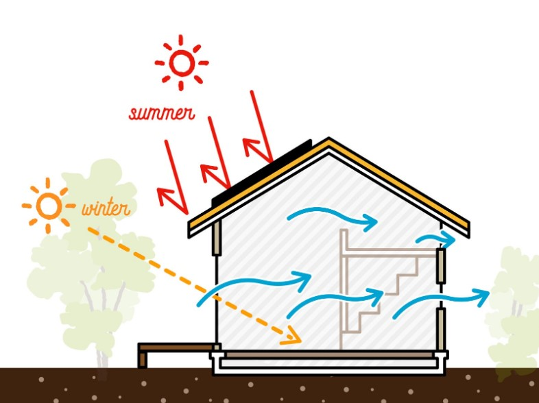

OVERHANG CALCULATOR — PASSIVE SOLAR DESIGN
Enter your latitude and window dimensions, and the dates when your south-facing windows start feeling too hot. The tool works out the solar angles at solar noon and gives you the overhang depth that shades those months — while still admitting low winter sun.

The sun's elevation at solar noon depends on your latitude and the sun's declination that day, which swings from about +23.45° at the June solstice to −23.45° at the December solstice. This tool uses the standard approximation for declination and reports elevation as 90° minus the gap between your latitude and that declination — accurate to roughly a degree, which is close enough for sizing lumber but not for a survey stake.
The overhang depth comes from one triangle: the vertical drop from the eave to the bottom of the window, divided by the tangent of the sun's elevation on your more restrictive date, minus your wall thickness. Whichever of your two dates has the lower sun angle is the one that governs — a lower angle casts a longer shadow, so an overhang sized for it will also cover the higher-angle date for free.
Because the sun's elevation rises and falls symmetrically around the solstice, an overhang built for one side of summer automatically starts (or stops) shading on the mirror-image date on the other side — which is usually earlier in spring or later in fall than your actual hot season. That's the extra shaded window shown below the result.
This whole method assumes you're well outside the tropics, where the sun stays on the south side of the sky year-round. Within about 23.5° of the equator, the sun passes to the north for part of the year and a south-facing overhang alone won't do the job — north-facing glass needs its own treatment.
For a second opinion on any date's elevation, NOAA publishes a free solar calculator at gml.noaa.gov/grad/solcalc.